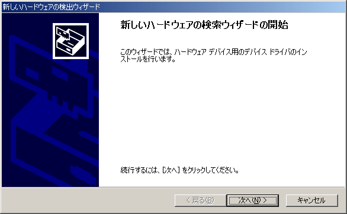
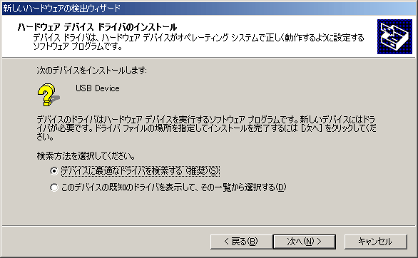
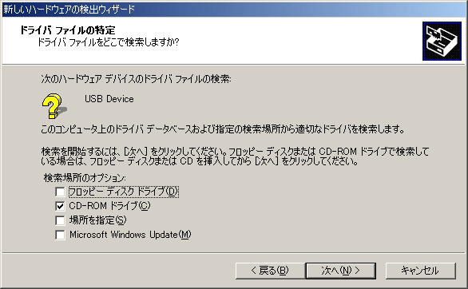

ステレオラベリングカメラ ソフトウェアCD-ROMのご案内
この度はステレオラベリングカメラをお買い上げいただきまして誠にありがとうございます。
ここでは、 本CD-ROMに収められているデバイスドライバー、３Ｄモーショントラッカーについて簡単に説明させていただきます。
Windows2000が起動しているパソコンにステレオラベリングカメラが繋がっているUSBケーブルを接続してください。
Windows2000が新しいハードウェア（ステレオラベリングカメラ）を検出します。

「次へ」を押してください。

「デバイスに最適なドライバを検索する」を選んで「次へ」を押してください。

デバイスドライバは本CD-ROMのフォルダ "driver"に入っていますので、「CD-ROMドライブ」または「場所を指定」をチェックして「次へ」を押してください。
"SlcDrv.inf"が検索されたらインストールを進めてください。
デバイス"Stereo Labeling Camera"のインストール完了メッセージが出れば、インストールは成功です。
ソフトウェア一式は本CD-ROMのフォルダ"3D Motion Tracker"に入っています。
ハードディスク上の任意のフォルダに"3D Motion Tracker"以下のファイルとフォルダをコピーしてください。コピーしたら、すべてのファイルに対して付いている「読み取り専用」属性を解除してください。
※読み取り専用属性の解除方法
①コピー先のファイルをすべて選択
②右クリック→メニュー→「プロパティ」を選択
③「読み取り専用」 チェックボックスのチェックをはずしてください。
④「ＯＫ」を押してダイアログを閉じます。
製品に関するお問い合わせ、ご相談等は下記までお願いいたします。
株式会社サイヴァース
URL ： http://www.cyverse.co.jp
E-Mail ： sales@cyverse.co.jp
〒216-0003
神奈川県川崎市宮前区有馬2-8-24 日機電装ビル3階
TEL： 044-888-1944
FAX： 044-888-1094〒150-0046
東京都渋谷区松濤1-28-4 松濤六番館3階
TEL： 03-5456-4077
FAX： 03-5456-4085
Copyright (C) 2001 CyVerse Corp.